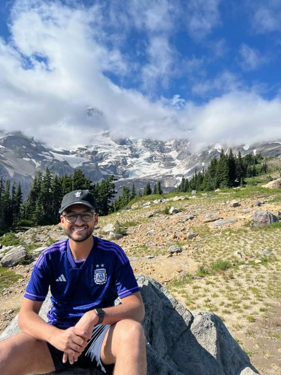

Now
What I'm focused on at the moment. (This is a /now page — updated periodically.)

I'm currently an Interventional Radiology resident at Duke University, completing my preliminary year in general surgery. I'm passionate about the integration of artificial intelligence in medicine, with a specific focus on interventional radiology.
Alongside residency, I'm building in this space — medical education, clinical decision support, and knowledge dissemination — through Dendro and guidewIRe, and writing The Interventionist.
I'm a coffee enthusiast, and I've been teaching myself piano in between cases.
I'm constantly learning and growing, and building this site is an avenue to do that. Come and join me on my journey.
Hossam Zaki
Durham, NC
2026 Highlights
- Graduated from medical school at Brown University's Warren Alpert Medical School.
- Matched into my #1 residency — Integrated Interventional Radiology at Duke.
- Received the Rhode Island Radiological Society Award.
- Published research: retrieval-augmented generation for periprocedural anticoagulation in IR (CVIR), an open-source LLM for predicting CPT codes from IR notes (JVIR), and ChatGPT vs. breast radiologists on ACR appropriateness criteria (Academic Radiology). See all publications →
Last updated June 2026.